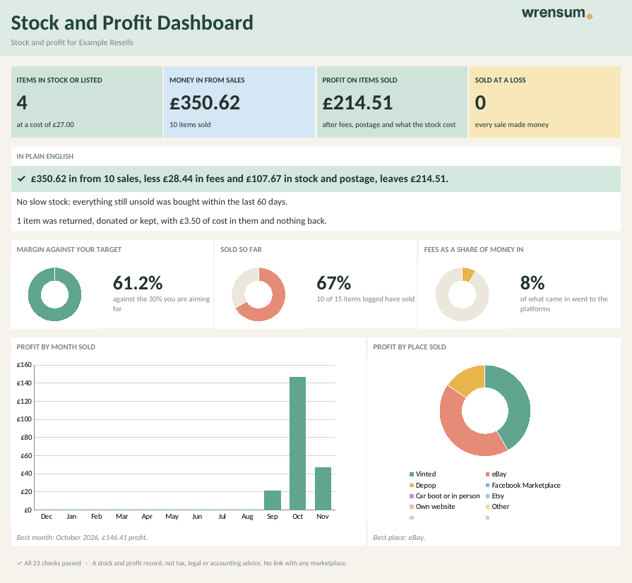
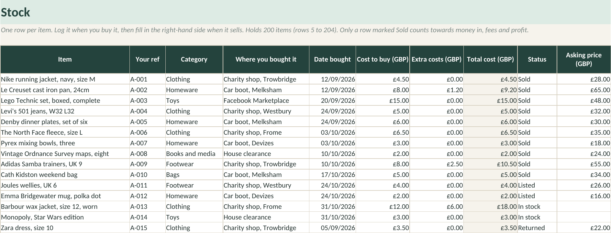
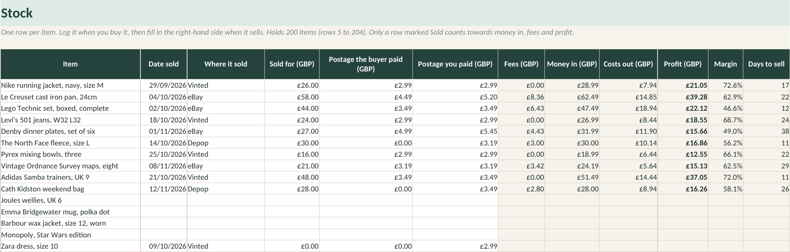
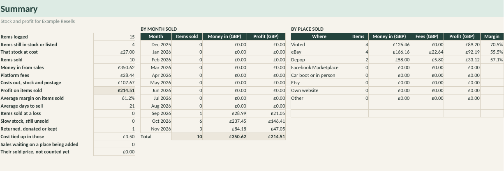
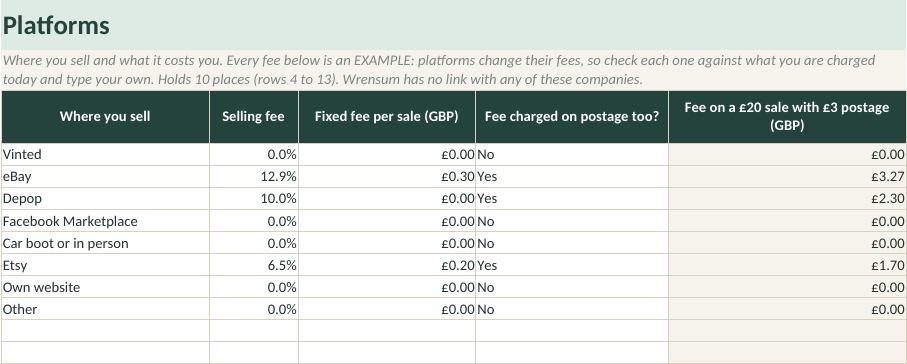

Reseller's Stock and Profit Tracker
Log what you buy, mark it sold, and see what you actually made once the platform fee, the postage and the packaging are out. Stock you are still holding is counted at cost and kept well away from profit, so a full cupboard never looks like money you have made.
Buy for £7One-off payment. One Excel file (.xlsx), delivered as a download. A stock and profit record: it is not tax, legal or accounting advice, and it has no link with any marketplace.

What you get
- Room for 200 items, with fifteen filled in as examples so you can see how it works before you clear them
- One row per item: what it is, your own reference, the category, where you bought it, the date and what it cost
- An extra costs box for what you spend on the item after buying it: a clean, a repair, a part, the postage to get it to you
- A status for every item, from In stock through Listed to Sold, Returned, Donated or Kept
- Your own list of up to 10 places you sell, each with its selling fee, its fixed fee and whether it takes a cut of the postage too
- The fee for every sale worked out from that list, so you never have to do the sum
- Money in, costs out, profit and margin for each item, and the days it took to sell
- A summary by month and by place, so you can see which platform actually pays you best after its fees
- A count of stock that has sat unsold longer than you are happy with, at a number of days you choose
- A dashboard, in light and dark, that says in plain English what you made and warns when something sold at a loss
- A sheet of 23 checks that looks for common slips: a fee typed as 12.9 instead of 12.9%, a price typed as text, a sale with no date, an item sold before you bought it
Who it is for
People in the UK reselling second-hand or bought-to-resell items on Vinted, eBay, Depop, Facebook Marketplace or at car boots, who want to know what they are really making rather than what landed in the account. You need Microsoft Excel.
How to use it
- In Settings, put in what a parcel's packaging costs you and the margin you are aiming for.
- On Platforms, set the fee for each place you sell. Examples are filled in: check every one against what you are charged today, because platforms change their fees.
- Log each item as you buy it, with its cost and the date, and set Status to In stock.
- When it sells, fill in the date, the place, the price and both postage figures, and change Status to Sold. Everything else works itself out.




Questions
- Does it tell me whether I have to declare this to HMRC?
- No, and it holds no tax figures or thresholds at all. That is deliberate: whether this income has to be declared depends on your own circumstances, and a number printed in a spreadsheet is no substitute for checking. See GOV.UK or ask an accountant.
- Are the fees in it correct?
- They are examples, and they were not checked against any platform on the day the file was built. Platforms change their fees, so the file asks you to put in what you are actually charged. That is why the fees sit on their own sheet where you can edit them.
- Is this made by, or connected to, Vinted or eBay?
- No. Wrensum has no link with any marketplace. The names are there as example rows because they are the places people sell, and you can rename or delete every one of them.
- What if I sell somewhere that is not on the list?
- Add it to the Platforms sheet with its fee, and pick it from the drop-down. Until you do, the sale has no fee, so it is not counted at all rather than counted wrongly, and the Checks sheet tells you which sale is waiting. A profit figure that is quietly too high is worse than one that says it is not ready.
- Does stock I have not sold count as profit?
- No. Items still In stock or Listed are counted at what they cost you and shown separately. Nothing becomes profit until it is marked Sold.
- What about something that came back?
- Mark it Returned. It keeps the cost and earns nothing, which is what actually happened. Donated and Kept work the same way.
- Can it work out postage for me?
- No. You type what the buyer paid and what you paid, because that depends on the size, the courier and the day. Keeping them apart is the point: on some platforms the buyer's postage is also charged a fee.
- What do I need to open it?
- Microsoft Excel. The file has also been tested in LibreOffice Calc. It contains no macros.
- Are the items in it real?
- No. Every item, price and date in the file is invented, to show the format. Type over them with your own.
- How was it made?
- It was built with the help of AI, like everything on this site, and then checked: it recalculates with no errors, it has 23 checks of its own, and an independent set of tests works out every figure a second way before release.
Free to use first
The markup and margin calculator shows what to charge to hit a margin, and the cash runway calculator shows how long money in the bank will last.
Other tools
If you want a full set of books rather than a stock list, the Sole Trader Bookkeeping Workbook (£12) records a year of income and expenses under the box numbers of HMRC's short self-employment pages.